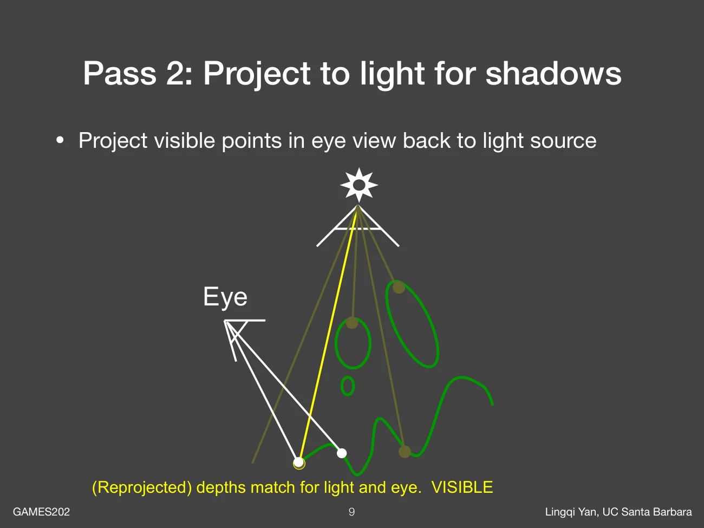
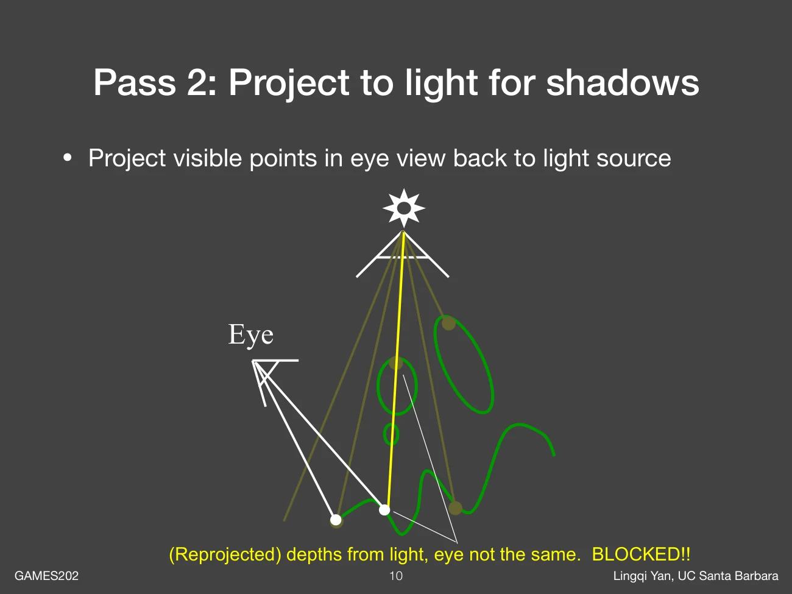
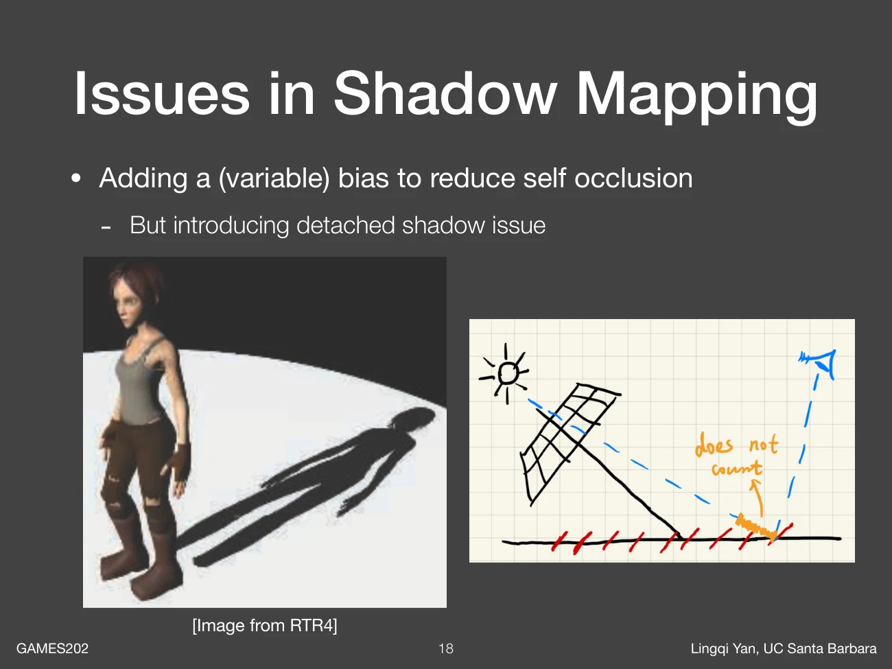
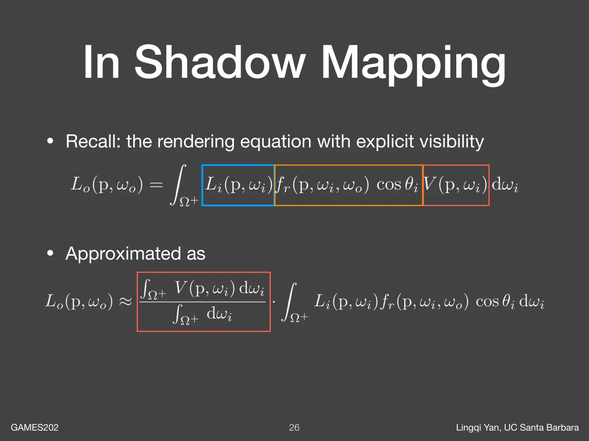
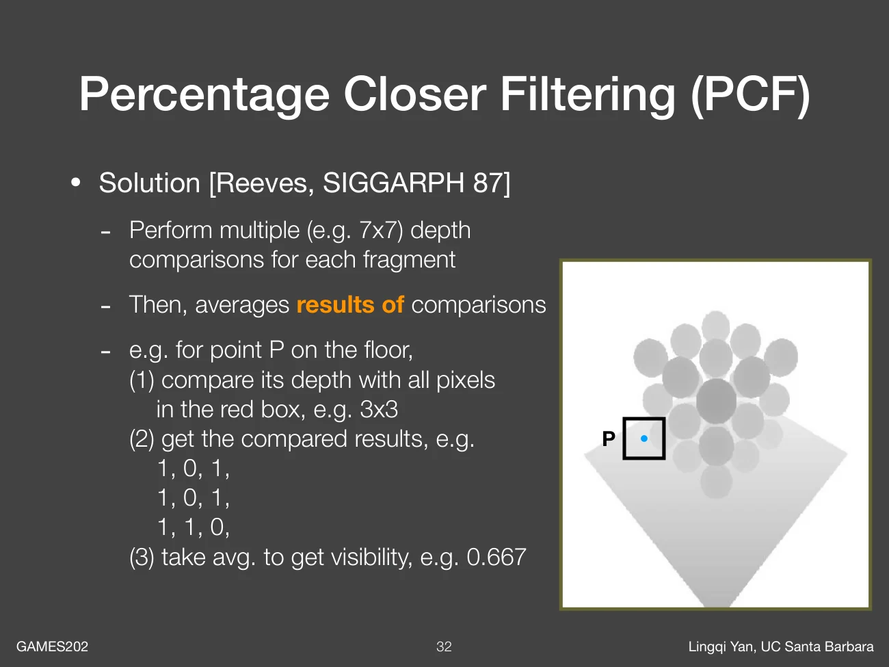
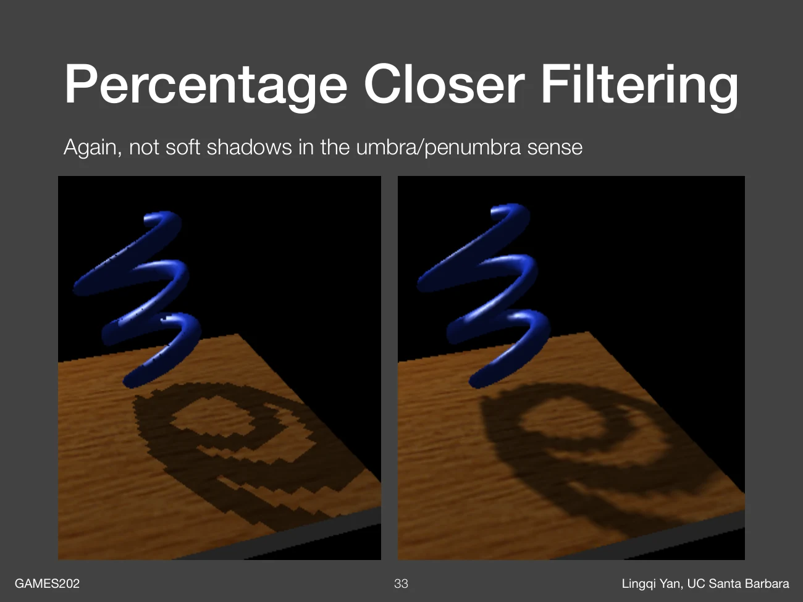
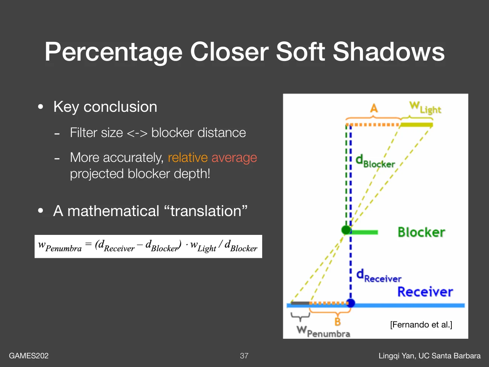
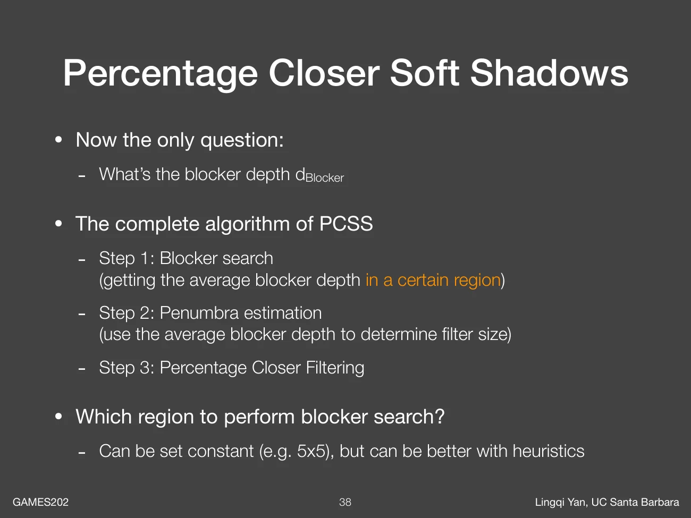

第 3 讲：实时阴影（一）——Shadow Mapping、PCF 与 PCSS
从两趟 Shadow Mapping 出发，用近似数学解释它为什么成立，再用 PCF/PCSS 把硬阴影变成可控的软阴影。
◆ 学完这一讲，你应该能
能独立复述 Shadow Mapping 的两趟流程，并说清它为什么是图像空间算法、优缺点各是什么
能写出带可见性项的渲染方程，并解释把可见性提到积分外这一近似在什么条件下成立
能说明 PCF 为什么是“比较后再平均”而不是“平均后再比较”，以及滤波核大小与阴影软硬的关系
能按三步（blocker search → penumbra estimation → PCF）描述 PCSS 的完整算法，并解释滤波核大小如何由遮挡物距离决定
能在 UE/Unity 中定位与阴影 bias、PCF/PCSS 相关的设置项，并判断常见阴影瑕疵的成因
核心结论速记
Shadow Mapping 是两趟算法：先从光源渲染一张深度图（SM），再从相机渲染，把可见点投影回光源空间比较深度，深度更大则被遮挡。
它是图像空间算法：不需要场景几何信息，但会带来自遮挡（shadow acne）与锯齿（aliasing）两类固有问题。
自遮挡用 bias 缓解，但 bias 过大会产生“阴影脱离物体”（peter-panning）；second-depth shadow mapping 是另一种思路，但要求物体水密且开销不划算。
实时渲染里大量使用“把可见性从积分中提出来”的近似：只有当光源支撑小（点光/方向光）或 integrand 平滑（漫反射、常量环境光）时才比较准。
PCF 的正确做法是对每个 fragment 做多次深度比较、再对比较结果求平均，得到非 0/1 的可见性；直接模糊 shadow map 再比较仍然是二值的。
PCF 滤波核越大阴影越软，但核大小固定时软硬不随距离变化；PCSS 用遮挡物平均深度动态决定核大小，从而得到近实远虚的软阴影。
PCSS 三步：blocker search 求平均遮挡深度 → 用相似三角形估计半影大小 → 以该大小做 PCF。
011. 两趟 Shadow Mapping：从光源拍一张深度图，再从眼睛做比较
Shadow Mapping 是实时阴影最经典、最基础的算法，早在《玩具总动员》时代的离线渲染里就在用。它只需要两趟（two-pass）：
第一趟：从光源渲染。 把虚拟相机放在光源位置，朝场景渲染一遍，但只输出深度——得到一张「深度纹理」（depth texture），通常叫 shadow map（SM）。对点光源就是一张立方体阴影贴图（cube shadow map），对方向光就是一张正交投影的深度图。
第二趟：从眼睛渲染。 正常渲染相机视角的图像。对每个可见的着色点 \(p\)，把它投影回光源空间，得到它在 SM 上对应的像素，取出该像素记录的深度 \(d_{SM}\)，再和 \(p\) 自己在光源空间的深度 \(d_p\) 比较：
- 若 \(d_p \approx d_{SM}\)：说明从光源看过去，这个点就是最近的那个表面，可见；
- 若 \(d_p > d_{SM}\)：说明光源到 \(p\) 之间还有更近的东西挡着，被遮挡。
这就是「Project to light for shadows」那几页图在演示的事：把眼睛可见的点重投影回光源，深度对得上就是可见，对不上就是被挡。
它的性质要记牢：
- 优点：图像空间算法，不需要知道场景几何（不需要光线求交、不需要 BVH），因此对任何能光栅化的几何都通用，实现简单、GPU 友好。
- 缺点：正因为只看图像，会引入自遮挡（self occlusion / shadow acne）和锯齿（aliasing）两类问题，这两者正是后面 bias 与 PCF 要解决的。
还有一个容易被忽略的细节：阴影贴图只记录「从光源看最近的深度」，所以曲面高光在彼此身上投出的高光阴影是不会出现的——高光不是几何遮挡，SM 里根本没有这个信息。


补充说明
SM 的分辨率决定了阴影的“像素粒度”，分辨率不足时边缘会出现阶梯状锯齿，这是 P20 讲的 aliasing 问题的根源之一。
常见坑
把相机空间的深度直接和 SM 比较 → 阴影全错 → 必须先把着色点变换到光源的投影空间（light space），再比较同一坐标系下的深度。
方向光用了透视投影矩阵 → 阴影随距离变形、远处漏光 → 方向光应使用正交投影（Orthographic）。
点光源只用一张 2D 深度图 → 背面方向完全错误 → 点光源需要 cube shadow map 或至少 6 个面。
UE / Unity 落地
UE：Directional Light 的 Shadow 走 CSM（级联阴影贴图），Point Light 默认用 cube shadow map；可在光源组件上开关 Cast Shadows。
Unity：Light 组件的 Shadow Type（Hard/Soft）对应是否启用 PCF；Directional Light 同样使用级联。
022. 自遮挡与 bias：为什么阴影会“长毛”，又为什么会“飘起来”
Shadow Mapping 最烦人的瑕疵是自遮挡（self occlusion）：明明朝着光的表面，却被自己投上了条纹状阴影，俗称 shadow acne。
原因很朴素：SM 是按像素离散存储的，一个像素记录的是该小区域内最近表面的深度。当光线斜着打到表面时，同一个像素覆盖的表面深度差异很大，着色点的深度 \(d_p\) 稍大于 SM 里记录的 \(d_{SM}\)，就被误判为遮挡。光线越斜（掠射角越小）、SM 分辨率越低，自遮挡越严重。
工程上的标准解法是加一个 bias：比较时改成 \(d_p - \text{bias} > d_{SM}\) 才算遮挡，相当于给深度比较留一点容差。bias 可以是常数，也可以随法线与光线夹角变化（variable bias）。
但 bias 是把双刃剑：加得太大，本该被遮挡的区域也被判成可见，阴影会从物体底部“脱离”，出现 detached shadow（peter-panning）——物体像浮在空中，影子却留在原地。
还有一条思路叫 second-depth shadow mapping：SM 里不存第一层深度，而存第一层与第二层深度的中点，用中点去比较。这样对“薄物体”更稳，但它要求物体是水密（watertight）的（不能有开口、单面片），而且要多存一层深度、开销不一定划算。课件在这里引用了 RTR 的一句话：RTR does not trust in COMPLEXITY——实时渲染不迷信复杂方案，简单可靠往往赢。

补充说明
另一种常见做法是 front-face culling：第一趟只渲染背面，从根上减少自遮挡，但要求物体封闭。
常见坑
bias 写成固定大常数 → 近处 peter-panning、远处仍有 acne → 改用随斜率变化的 variable bias（如按 \(\tan\theta\) 缩放）。
只调 bias 不调 SM 分辨率 → 掠射面始终有条纹 → 提高 shadow map 分辨率或改用 CSM 分级。
second-depth 用在有开口的模型上 → 中点深度无意义、阴影错乱 → 确认模型 watertight 再使用。
UE / Unity 落地
UE：光源的 Shadow Bias / Slope Bias 就是这里的常数 bias 与斜率相关 bias；调大 Shadow Bias 可去 acne，但过大会 peter-panning。
Unity：Light 组件有 Bias 与 Normal Bias 两个参数，Normal Bias 沿法线偏移采样点，对斜面 acne 更有效。
033. 阴影背后的数学：把可见性从积分里提出来
这一节回答一个更深的问题：Shadow Mapping 到底在近似什么？
带显式可见性的渲染方程是： \[ L_o(p,\omega_o)=\int_{\Omega^+} L_i(p,\omega_i)\, f_r(p,\omega_i,\omega_o)\, \cos\theta_i\, V(p,\omega_i)\, d\omega_i \] 其中 \(V\) 是可见性（0 或 1）。直接对这个积分做数值求解太贵，实时渲染做了一个关键近似：把可见性提到积分外面，用它的平均值去乘“不考虑阴影时的光照”： \[ L_o \approx \frac{\int_{\Omega^+} V\, d\omega_i}{\int_{\Omega^+} d\omega_i} \cdot \int_{\Omega^+} L_i f_r \cos\theta_i\, d\omega_i \] 也就是「先算无阴影光照，再乘一个平均可见性」。这本质上是把两个函数的积分拆成积分之积，数学上一般不等，但实时渲染只关心“差不多等于”。
什么时候这个近似比较准？ 课件给了两个条件：
- 光源支撑小：点光源、方向光，\(V\) 在积分域里几乎是常数（要么全可见要么全遮挡），提出来误差小；
- integrand 平滑：漫反射 BSDF、常量辐照度的面光源，被积函数变化平缓，乘积的积分接近积分之积。
反过来，当光源很大、材质高光很尖时，这个近似就会明显出错——这也是为什么后面要专门讲软阴影。课件还点了一句：这个近似在 Ambient Occlusion 等地方还会再见到，是实时渲染的通用套路。

补充说明
这个近似和“环境光遮蔽 AO”是同一家族：AO 就是把 \(V\) 换成余弦加权的可见性平均。
常见坑
以为这个近似“永远成立” → 大面积光源 + 高光材质下阴影与光照不匹配 → 记住它只在光源小或 integrand 平滑时准。
把平均可见性当成逐方向精确值 → 半影区域出现亮度跳变 → 需要 PCF/PCSS 这类在比较层面做平均的方法。
UE / Unity 落地
UE 的 Lumen / 距离场阴影本质也是在近似可见性；理解“可见性可分离”有助于读懂引擎里 shadow 与 lighting 解耦的管线设计。
Unity 的 Shadowmask / Baked GI 同样把阴影与间接光分开处理，思路一致。
044. PCF：比较之后再平均，才能得到非 0/1 的可见性
硬阴影边缘是锯齿状的，最直觉的修法是“把 shadow map 模糊一下”。但课件明确说：不行。纹理滤波只是对颜色做平均，先模糊 shadow map 得到的是模糊的深度值，再拿它去比较，结果仍然是 0 或 1 的二值可见性——边缘该硬还是硬。
正确做法是 Percentage Closer Filtering（PCF）：对每个 fragment，在 shadow map 上取一个邻域（例如 3×3 或 7×7），对邻域内每个像素分别做深度比较，得到一堆 0/1，再对这些比较结果求平均：
\[ V(p) \approx \frac{1}{N}\sum_{q\in \mathcal{N}(p)} \big[ d_p - \text{bias} \le d_{SM}(q) \big] \]
这样得到的可见性是 0 到 1 之间的连续值，阴影边缘就出现了渐变。注意 PCF 最初是为了抗锯齿（anti-aliasing），并不是为了物理上正确的软阴影；它只是让边缘变柔和。
滤波核大小有影响吗？ 有：核小 → 边缘锐利；核大 → 更柔和。那能不能直接用 PCF 做软阴影？可以“看起来像”，但核大小是固定的，不会随遮挡物远近变化，所以不是物理正确的半影。这就引出了下一节的 PCSS。


补充说明
PCF 的开销与核面积成正比，7×7 就是 49 次比较，所以工程上常用可分离近似或抖动采样来降成本。
常见坑
先对 shadow map 做双线性/高斯模糊再比较 → 边缘仍是硬边 → 改为对比较结果做平均。
PCF 采样点太少（如 2×2）→ 边缘出现规则条纹/噪点 → 增加采样数或用泊松盘等抖动采样。
把 PCF 当成软阴影 → 远近物体阴影软硬一样 → 需要 PCSS 动态核大小。
UE / Unity 落地
UE：光源的 Shadow Filter Sharpen / PCF 质量档位控制的就是这类邻域比较的采样规模。
Unity：Light 的 Shadow Type 选 Soft 即启用 PCF；Quality Settings 里的 Shadow Cascades / Shadow Resolution 影响其效果。
PCF 核心：比较后平均（hlsl）
float pcf(float2 uv, float d, float bias, int r) {
float sum = 0.0;
int n = 0;
for (int y = -r; y <= r; ++y)
for (int x = -r; x <= r; ++x) {
float dSM = tex2D(shadowMap, uv + float2(x, y) * texelSize).r;
sum += (d - bias <= dSM) ? 1.0 : 0.0;
++n;
}
return sum / n; // 0..1 的可见性
}055. PCSS：用遮挡物距离决定滤波核大小
现实中的阴影有本影（umbra）和半影（penumbra）：遮挡物离接收面越近，半影越窄、阴影越锐；越远，半影越宽、阴影越软。PCF 的核大小固定，做不到这一点。
Percentage Closer Soft Shadows（PCSS） 的关键观察就是：滤波核大小 ↔ 遮挡物距离。更准确地说，取决于「相对平均投影遮挡深度」（relative average projected blocker depth）。
课件用相似三角形给出“数学翻译”：设光源尺寸为 \(w_{Light}\)，遮挡物到接收面的距离为 \(d_{Receiver}-d_{Blocker}\)，遮挡物到光源的距离为 \(d_{Blocker}\)，则半影宽度近似为 \[ w_{Penumbra} \approx \frac{d_{Receiver}-d_{Blocker}}{d_{Blocker}}\, w_{Light} \] 遮挡物越靠近接收面（\(d_{Receiver}-d_{Blocker}\) 小），半影越窄；越靠近光源（\(d_{Blocker}\) 小），半影越宽。
完整算法分三步：
- Blocker search：在 shadow map 上取一个区域，找出所有深度小于当前点深度的像素（即遮挡物），求它们的平均深度 \(d_{Blocker}\)；
- Penumbra estimation：用上面的相似三角形公式，由 \(d_{Blocker}\) 算出滤波核大小；
- Percentage Closer Filtering：以该核大小做 PCF，得到最终可见性。
那 blocker search 的区域取多大？可以设成常数（如 5×5），但更合理的是由光源大小和接收点到光源的距离决定——光源越大、接收点离光源越远，搜索区域越大。这就是 PCSS 比 PCF 贵得多的原因：它多了一次区域搜索，而且核大小是逐像素变化的，无法预先烘焙。


补充说明
PCSS 的 blocker search 与 PCF 都是区域采样，实时里通常用泊松盘/随机旋转来用少量样本换取可接受的噪声。
常见坑
blocker search 取最小深度而不是平均深度 → 半影估计偏小、阴影过硬 → 应对所有 blocker 求平均。
搜索区域固定且过小 → 大光源下找不到足够 blocker，半影断裂 → 按光源大小与距离缩放搜索区域。
把 \(d_{Blocker}\) 当成接收面深度 → 公式分母错、半影宽度离谱 → 明确 \(d_{Blocker}\) 是遮挡物在光源空间的深度。
UE / Unity 落地
UE：PCSS 不是默认阴影模型，但可通过材质/自定义节点或插件实现；接触阴影（Contact Shadow）可看作距离很近时半影极窄的特例。
Unity：HDRP 提供 PCSS 软阴影选项（Screen Space Shadows / PCSS），URP 需自行实现或使用第三方。
PCSS 三步伪代码（hlsl）
float pcss(float2 uv, float dReceiver, float bias, float lightSize) {
// Step 1: blocker search
float sumBlocker = 0.0; int cnt = 0;
for (samples in searchRegion) {
float dSM = tex2D(shadowMap, uv + offset).r;
if (dSM < dReceiver - bias) { sumBlocker += dSM; ++cnt; }
}
if (cnt == 0) return 1.0; // 无遮挡
float dBlocker = sumBlocker / cnt;
// Step 2: penumbra estimation
float wPenumbra = (dReceiver - dBlocker) / dBlocker * lightSize;
// Step 3: PCF with kernel size ~ wPenumbra
return pcf(uv, dReceiver, bias, kernelRadius(wPenumbra));
}引擎对照表
| 概念 / 效果 | Unreal Engine | Unity |
|---|---|---|
阴影贴图生成 | 光源 Shadow Map / CSM（方向光） | Light Shadow Type + Shadow Cascades |
自遮挡 bias | Shadow Bias / Slope Bias | Bias / Normal Bias |
PCF 软边 | Shadow Filter 质量档位 | Shadow Type = Soft（PCF） |
PCSS 物理软阴影 | 需自定义/插件，Contact Shadow 可近似近距特例 | HDRP 的 PCSS 选项 |
点光源阴影 | Cube Shadow Map | Point Light 的 cube shadow |
术语双语表
| English | 中文 | 说明 |
|---|---|---|
| Shadow Mapping | 阴影贴图 | 两趟图像空间阴影算法：光源深度图 + 相机视角深度比较。 |
| Shadow Acne | 自遮挡/阴影痤疮 | 离散深度比较导致的表面条纹状错误阴影。 |
| Peter-panning | 阴影脱离 | bias 过大导致阴影与物体接触处分离、物体像浮空。 |
| Second-depth Shadow Mapping | 第二深度阴影 | SM 存第一与第二深度中点，减少自遮挡，但要求水密几何。 |
| PCF | 百分比渐进滤波 | 对邻域逐像素比较后平均，得到 0..1 可见性，用于抗锯齿。 |
| PCSS | 百分比渐进软阴影 | 用平均遮挡深度动态决定 PCF 核大小，得到近实远虚的半影。 |
| Blocker Search | 遮挡物搜索 | PCSS 第一步：在 SM 区域中找遮挡物并求平均深度。 |
| Penumbra | 半影 | 本影外沿的渐变过渡区，宽度由遮挡物距离与光源尺寸决定。 |
| Visibility | 可见性 | 渲染方程中的 0/1 项，实时渲染常近似为可分离的平均值。 |
课后练习
01 用自己的话说明 Shadow Mapping 为什么是“图像空间算法”，并各举一个它因此获得的优点和缺点。
查看答案
提示：
想想它需不需要场景几何、需不需要光线求交。
它只在光源和相机的渲染图像（深度图）上操作，不需要场景几何或光线求交。优点：对任意可光栅化几何通用、实现简单、GPU 友好。缺点：受限于图像分辨率，产生自遮挡（shadow acne）与锯齿（aliasing）。
02 某方向光场景中，SM 记录某像素深度为 0.40，着色点光源空间深度为 0.42，bias 取 0.01。该点是否被遮挡？若 bias 改为 0.05 呢？并解释 bias 过大可能带来什么视觉问题。
查看答案
提示：
比较 \(d_p - \text{bias}\) 与 \(d_{SM}\)。
bias=0.01 时 0.42-0.01=0.41 > 0.40，判为遮挡；bias=0.05 时 0.42-0.05=0.37 ≤ 0.40，判为可见。bias 过大会让本该遮挡的区域变可见，产生 detached shadow（peter-panning），阴影与物体接触处脱离。
03 为什么不能“先把 shadow map 做高斯模糊，再拿模糊后的深度去比较”来获得软阴影？PCF 又是怎么做的？
查看答案
提示：
想想模糊后比较结果还是不是二值。
模糊 shadow map 只是平均深度值，比较结果仍是 0/1 二值，边缘依旧硬。PCF 是对邻域内每个像素分别比较得到 0/1，再对这些比较结果求平均，得到 0..1 的连续可见性，边缘才变软。
04 PCSS 中，若接收面深度 \(d_{Receiver}=0.8\)，平均遮挡深度 \(d_{Blocker}=0.5\)，光源尺寸 \(w_{Light}=0.1\)，求半影宽度 \(w_{Penumbra}\)。若遮挡物移到 \(d_{Blocker}=0.2\)，半影变宽还是变窄？
查看答案
提示：
用相似三角形公式 \(w_{Penumbra}=(d_{Receiver}-d_{Blocker})/d_{Blocker}\cdot w_{Light}\)。
第一次：\((0.8-0.5)/0.5\times 0.1 = 0.06\)。第二次：\((0.8-0.2)/0.2\times 0.1 = 0.30\)。遮挡物离光源更近（\(d_{Blocker}\) 更小）时半影更宽，阴影更软。
05 在 UE 里做一个实验：把 Directional Light 的 Shadow Bias 从默认值逐步调大，观察阴影根部。记录你看到的现象并解释原因；再说明你会如何在不产生 peter-panning 的前提下减轻 acne。
查看答案
提示：
关注阴影与物体接触处是否分离。
bias 增大后 acne 减少，但阴影根部逐渐与物体分离（peter-panning），因为深度比较容差过大。更好的做法：使用 Slope/Normal Bias 让偏移随光线与法线夹角变化，提高 shadow map 分辨率或启用 CSM，必要时用 front-face culling，而不是一味加大常数 bias。